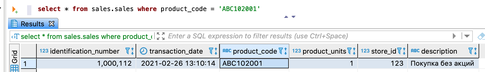

Система позволяет запрашивать небольшие объемы актуальных и архивных данных, а также изменений, выполненных в рамках указанных дельт. Возможные способы выборки данных описаны в секции FOR SYSTEM_TIME раздела SELECT.
Чтобы запросить небольшой объем данных из логических таблиц и (или) представлений, выполните запрос SELECT. Запросы на чтение данных обрабатываются в порядке, описанном в разделе Порядок обработки запросов на чтение данных. При успешном выполнении запроса запрошенные данные возвращаются в ответе.
Примечание: под небольшим объемом данных подразумевается результат, содержащий десятки строк. Для запроса большого объема данных следует использовать функцию выгрузки данных.
На рисунке ниже показан пример запроса из логической таблицы sales, возвращающий одну строку.
Так как секция DATASOURCE_TYPE не указана, система автоматически направляет запрос в СУБД, оптимальную
для его исполнения (см. Маршрутизация запросов к данным).

Запрос небольшого объема данных
-- выбор логической базы данных sales в качестве базы данных по умолчанию
USE sales
-- запрос данных из логической таблицы sales
SELECT s.store_id, SUM(s.product_units) AS product_amount
FROM sales AS s
GROUP BY (s.store_id)
ORDER BY product_amount DESC
LIMIT 20
-- запрос данных из логического представления stores_by_sold_products
SELECT sold.store_id, sold.product_amount
FROM stores_by_sold_products AS sold